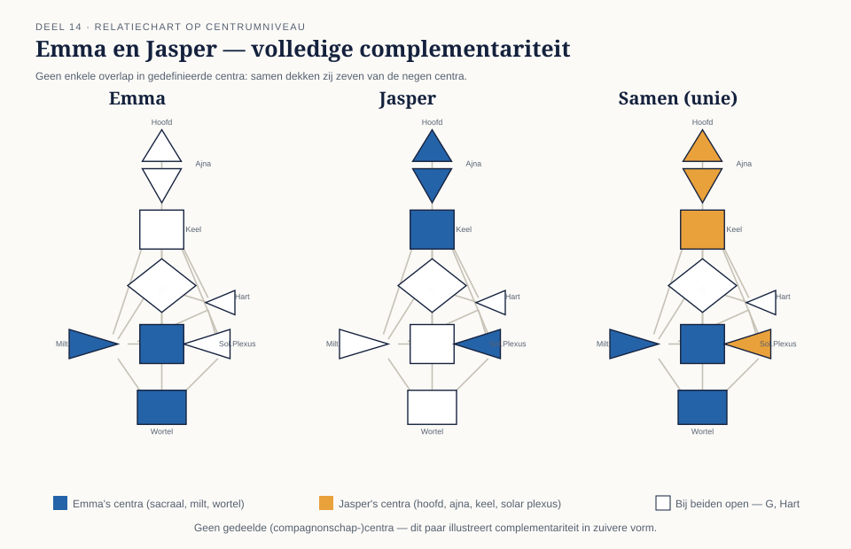

Het derde geheel
⏱ 14 minAlles tot nu toe in niveau 2 draaide om één kaart grondiger lezen. Vandaag leg je voor het eerst twee kaarten náást elkaar. Een relatiechart (ook wel composiet genoemd) onderzoekt niet twee losse mensen, maar het derde geheel dat ontstaat wanneer hun kaarten op elkaar inwerken — in een collegiale samenwerking net zo goed als in een liefdesrelatie, vriendschap of gezin. Je bouwt hiervoor voort op drie eerdere lagen: gedefinieerde/open centra (deel 5-6), circuits (deel 11) en het brugmechanisme van split-definitie (deel 12).
Leg je twee kaarten naast elkaar, dan ontstaat er een patroon dat bij geen van beide personen afzonderlijk bestaat: waar de een gedefinieerd is en de ander open, waar beiden hetzelfde hebben, en waar allebei half een thema dragen. De canon behandelt dit patroon als een eigen, derde "entiteit" — niet zomaar de optelsom van twee individuen, net zoals een kanaal niet de optelsom van twee poorten is (deel 10). Vandaag leer je dat patroon lezen op het niveau van centra — het meest overzichtelijke startpunt, dat je later met naslagwerk kunt verdiepen tot poort- en kanaalniveau (dezelfde methodische keuze als deel 10 voor losse kanalen).
